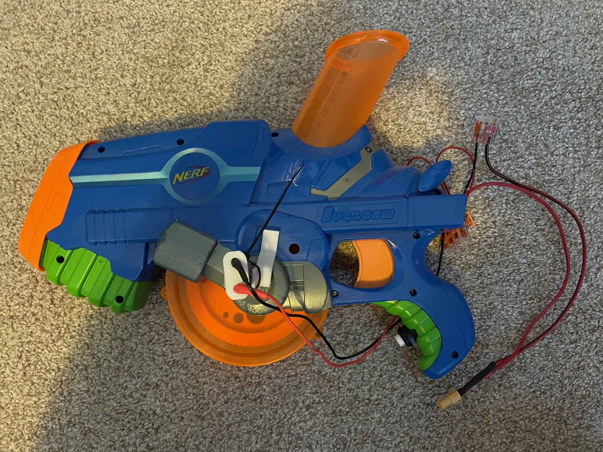

Through the use of Discord's API, I created a bot that would read trivia questions from an internet database to help myself and others practice for Quizbowl.
More
I worked with a team to design and test an autonomous power line crawling robot that could sense and report faults in power lines.
More
I learned the basics of HTML and CSS to create this portfolio website. I also used the assistance of AI to help come up with some ideas and increase the efficiency of my learning. While to some this may seem like a way to cheat, I think that learning to use AI to increase productivity without making a sacrifice in quality is going to be a great skill in the near future.
MoreA robot capable of following lines on a flat surface using light sensors. Automatically switches to a behavior that maintains a set distance from an object after completing one lap around a track.
More
I decided to "improve" one of my old Nerf guns by changing it from being manually powered to being powered by an electric motor.
More
A mechanical launcher used to test variability in gliders modeled after the wings of grasshoppers. Design choices were made to minimize human interaction with the launch itself to avoid errors.
More